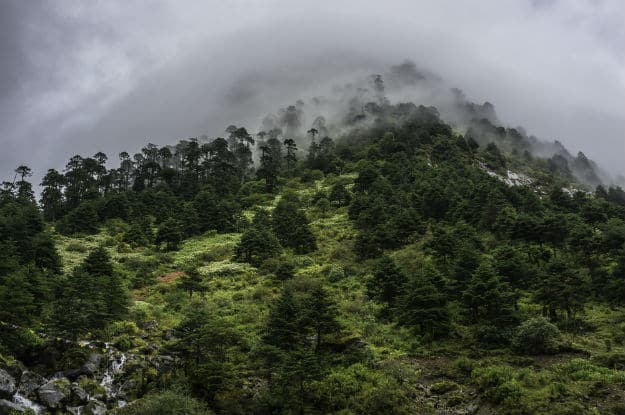
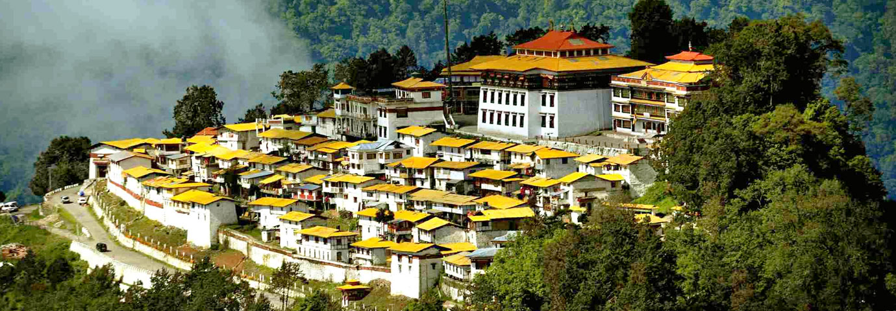
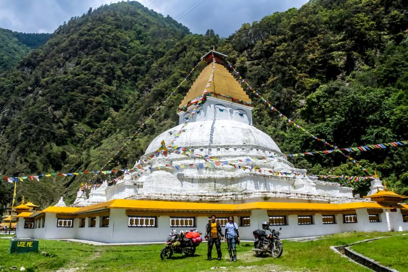

1 / 3

Caption one
2 / 3
Caption Two
3 / 3

Caption Three
3 / 3

Caption four
3 / 3

Caption five
Famous as the largest monastery in India, Tawang Monastery is one of the most incredible places to visit in Tawang. Also famous as Galden Namgyal Lhatse, Tawang Monastery is one of the most holy sites for the faith of Mahayana Buddhism. Belonging to the Gelugpa sect of Buddhism, Tawang Monastery is home to over 300 monks and holds 17 gompas in the region.
Offering a serene view of the Himalayan valley, Tawang Monastery is renowned for its 16th century architecture. Some of the famous things to look forward to at Tawang Monastery are sketches and paintings of Bodhisattvas, silver silk casket dedicated to Goddess Shri Devi and many other works of art. The most favourable time to visit Tawang Monastery is during the Losar festival held in the beginning of new year.
Tawang is a place with stunning natural beauty. The greenery, mountains, monasteries, prayer flags, and people make Tawang an extremely picturesque location. These Tawang photos show you how beautiful it is and tempt you to make it your next destination.
One of the most spectacular places to visit in northeast India is Tawang in Arunachal Pradesh. Located at an elevation of 3,048 metres, Tawang is a mesmerizing mountain town abundant in natural beauty as well as cultural heritage. On the one hand, it is home to the 17th century Tawang monastery that stands amidst scenic views of lush green mountains. On the other hand, it has the Tawang War Memorial which pays tribute to soldiers who died during the 1962 Sino-Indian war. Be it the waterfalls, the traditional houses, the monasteries, the lakes or the weather, this wonderful Buddhist destination is worth visiting at least once in a lifetime.